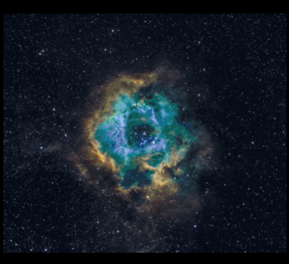
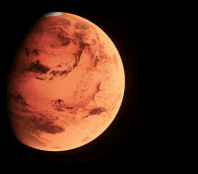

has been a central focus of astrophysics for decades. These enigmatic objects, with their incredible gravitational pull, challenge our understanding of the universe. Black holes are regions in space where the gravitational field is so strong that nothing, not even light, can escape from them.
Recent discoveries and observations, such as the first-ever image of a black hole captured by the Event Horizon Telescope, have provided unprecedented insights into their nature. Scientists are now exploring how black holes influence their surroundings, including the formation of galaxies and the behavior of matter under extreme conditions. By studying black holes, researchers hope to uncover the fundamental laws of physics, including the nature of gravity and the fabric of spacetime itself. The mysteries of black holes continue to inspire and challenge scientists, offering a window into the most extreme environments in the universe.

10 Mind-Blowing Facts About the Universe
will leave you in awe of the vast cosmos we inhabit. From the staggering size of the universe to the incredible phenomena occurring within it, each fact reveals just how extraordinary our universe truly is.
1. The universe is approximately 13.8 billion years old.
2. There are more stars in the universe than grains of sand on all the Earth's beaches.
3. The largest known star, UY Scuti, is over 1,700 times the size of the Sun.
4. A teaspoon of neutron star material would weigh about 6 billion tons.
5. The universe is expanding, and the rate of expansion is accelerating.
6. Dark matter and dark energy make up about 95% of the universe, yet we cannot see them.
7. Black holes can merge to form even larger black holes, releasing enormous amounts of energy.
8. There are more possible iterations of a game of chess than there are atoms in the observable universe.
9. The observable universe is about 93 billion light-years in diameter.
10. The Andromeda Galaxy is on a collision course with our Milky Way, set to collide in about 4.5 billion years.

Journey to Mars
is one of the most ambitious endeavors in human history. Scientists and engineers around the world are working tirelessly to make this dream a reality. The journey is fraught with challenges, from ensuring the safety of the astronauts to developing the technology needed for the trip.
NASA and other space agencies are developing advanced spacecraft and life support systems to sustain astronauts during the long journey. The mission aims not only to explore Mars but also to establish a human presence on the Red Planet. This will involve setting up habitats, conducting scientific research, and potentially terraforming parts of Mars to make it more habitable for humans. The success of this mission could pave the way for future interplanetary travel and the eventual colonization of other planets.
About Us
Our Mission: Go to Space and Explore and Share with You
At Go Space, we believe that the universe is a vast playground waiting to be explored. Our mission is simple yet profound: to venture into the depths of space, uncover its mysteries, and share the awe-inspiring discoveries with you. From the far reaches of distant galaxies to the wonders of our own solar system, we're dedicated to bringing the wonders of space closer to home.